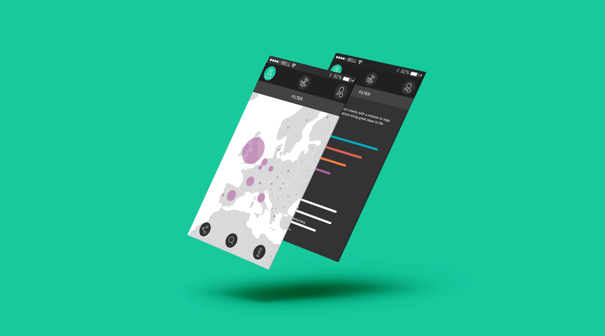
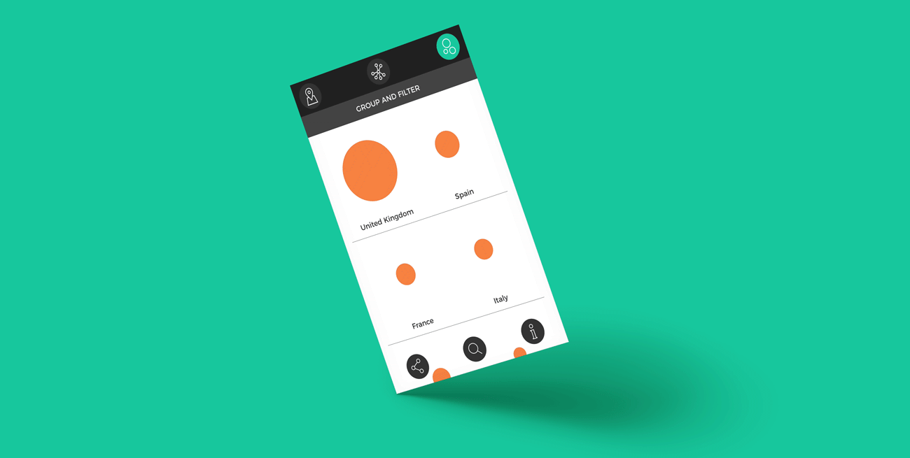
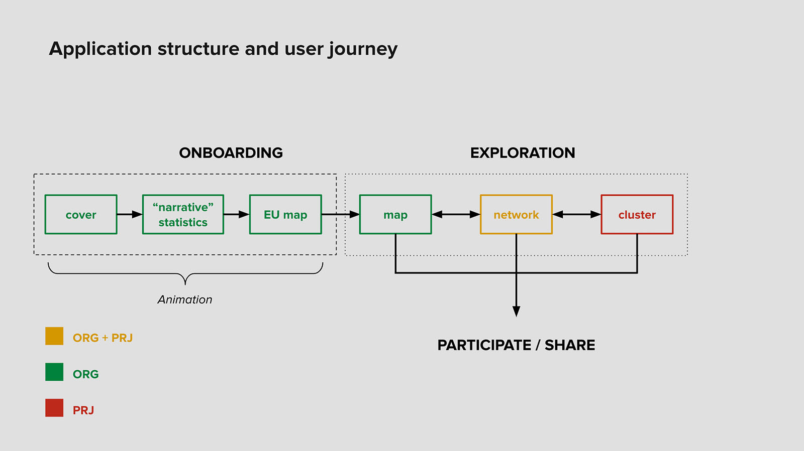

Client
Nesta
Year
2017
Team
TODO
Tasks
Design lead, data visualization, UX, UI, front-end development
Digital social innovation
Interactive online tool that invites users to explore the European social innovation network: hundreds of organizations applying digital technologies to tackle today’s social issues.
Link to live applicationGoals
1. Engage practictioners (member of the organizations) encouraging them to register a profile on the digitalsocial.eu platform.
2. Give policy makers better ways to identify areas (location, type of activity) in need of support.
3. Raise awareness of the general audience about social innovation.
Solution
A tool fed on real-time data featuring three distinct views, each one looking at organisations and projects from a different perspective.
Showing density and connections of organizations and projects, and clustering them on the basis of similarity criteria (location, topics of interest, technology), the tool gives practictioners a way to improve their opportunities for networking, and enables policy makers to better monitor the situation and plan their actions.
The possibility to share user generated interactive views fosters engagement and helps users to communicate insights to other people.
A settings panel allows users to configure the visualization and filter the displayed elements on the main categories.


The engage the general public a dedicate onboarding sequence has been designed in order to introduce organizations and projects and their visual representation. In addition, information panels have been added to each view, and dedicated coachmarks highlight specific exploration features.
Each custom view, keeping users' settings as zoom or filter configuration, can be “screenshot” and shared via social media or embedded into other web pages. Through this feature, each organization and project in the digitalsocial.eu website embeds a custom interactive view generated by the tool.
The application has been designed as mobile first,
but the desktop version has been carefully crafted as well
Results
In a one-year timespan, organizations and projects stored on the digitalsocial.eu platform have nearly doubled (organizations from more than 1000 to more than 2000, projects from nealy 800 to more than 1400), giving stakeholders a more reliable dataset and practictioners a useful tool to search for opportunities.
Process
After a first proposal including some references and a basic wireframe, a design sprint has been carried out with the customer, gathering client's and users' needs and coming up with shared user journey. From this point on, a collaborative process has been set up, having two checkpoints per week (one delivery and one remote meeting.

After some data exploration and some interactive prototyping with real data, a final user journey has been agreed. This has been maybe the most difficult step to achieve: many different solutions have been designed and carefully evaluated to deliver the best user experience.
The interactive prototypes displaying real data
have been very useful to discover
the best ways to deliver useful insights.
The whole project, from preliminary design to working online application, has been delivered in 6 weeks by a team of four people. I worked as lead designer and developer.